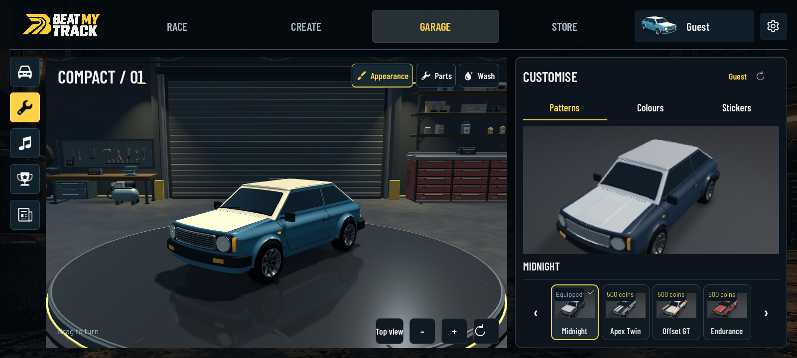
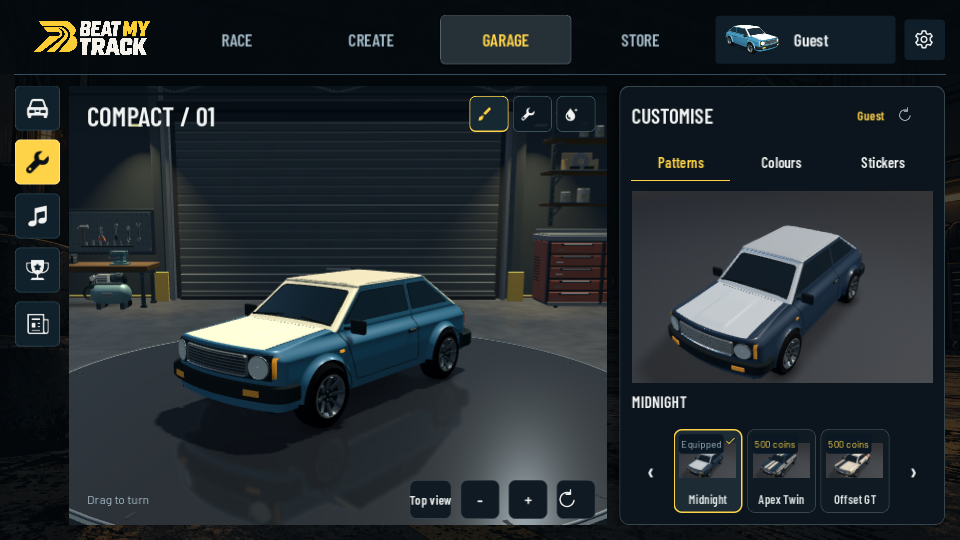
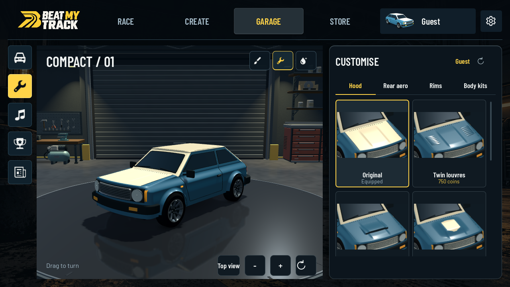
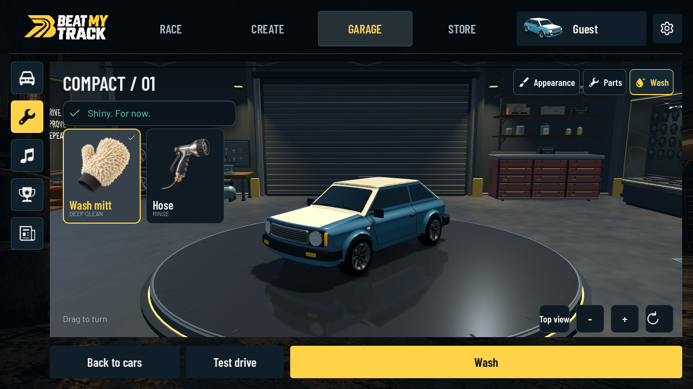
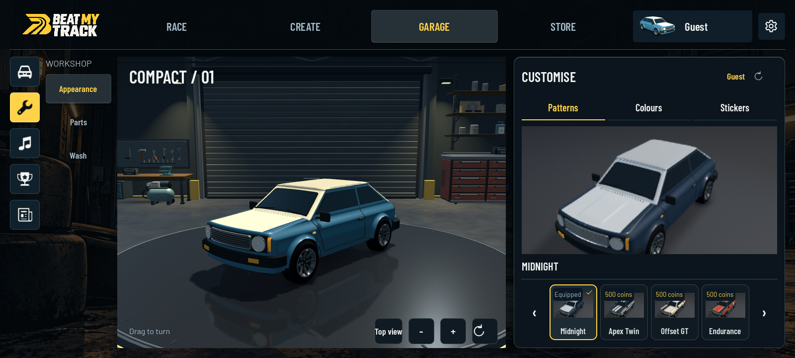
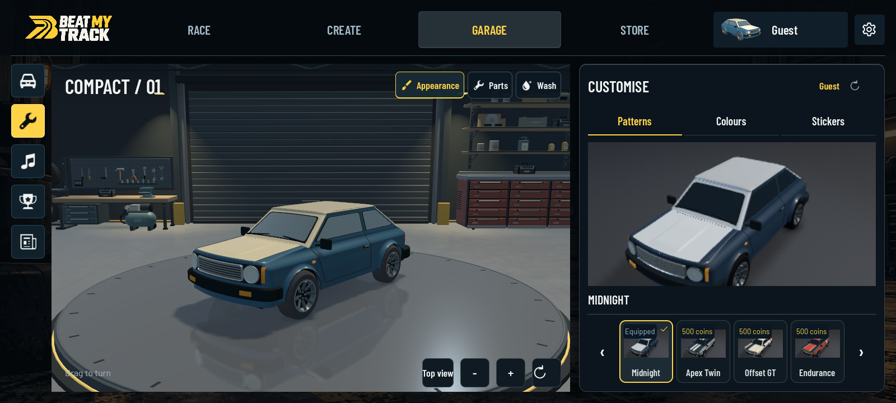

Actual native captures from isolated local records. Appearance, Parts and Wash float over the protected top edge of the showroom.






Actual checks, commands, source hashes and limitations · Scoped checkpoint
Client reload and owner visual/touch acceptance remain. No physical-device test was performed.